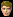

モンスター鑑別士
<称号効果>- 鑑別可能レベル [1.0~3.0]×本体Lv
- 鑑別可能分類 [アンデッド形 動物形 神獣形 悪魔形 人間形]
- 鑑別可能等級 [無し / 一般 １~４段階 / セミボス １~３段階 / ボス １~３段階]
<説明>
- モンスター情報, レベルが表示可能
| 称号効果 | |||||||||||
|---|---|---|---|---|---|---|---|---|---|---|---|
| 称号Lv | 1 | 2 | 3 | 4 | 5 | 6 | 7 | 8 | 9 | 10 | |
| 鑑別可能Lv （×本体Lv） |
1.0 | 1.2 | 1.4 | 1.6 | 1.8 | 2.0 | 2.2 | 2.4 | 2.6 | 3.0 | |
| アンデッド形 | ○ | ○ | ○ | ○ | ○ | ○ | ○ | ○ | ○ | ○ | |
| 動物形 | - | - | ○ | ○ | ○ | ○ | ○ | ○ | ○ | ○ | |
| 神獣形 | - | - | - | - | ○ | ○ | ○ | ○ | ○ | ○ | |
| 悪魔形 | - | - | - | - | - | - | ○ | ○ | ○ | ○ | |
|  | 人間形 | - | - | - | - | - | - | - | - | ○ | ○ |
| 鑑別可能等級 | 無し | 一般 １段階 |
一般 ２段階 |
一般 ３段階 |
一般 ４段階 |
セミボス １段階 |
セミボス ２段階 |
セミボス ３段階 |
ボス １段階 |
ボス ３段階 |
|

| - | |
|---|---|
- |
|
| 受諾場所 | ロマ村 ビスル ベシル（60.15） |
| 受諾条件 | Lv？ |
| 報酬 | モンスター鑑別士Lv4 |
| ロマ村 ビスル | 20万G払う |
| - | |
|---|---|
- |
|
| 受諾場所 | ロマ村 ビスル カレン（30.64） |
| 受諾条件 | Lv？ |
| 報酬 | モンスター鑑別士Lv5 |
| ロマ村 ビスル | 60万G払う |